Project 4: Image Warping and Mosaicing
Gautam Bhooma · CS 180 · Fall 2026
Part A: Image Warping and Mosaicing
Part A: Image Warping and Mosaicing
A.1: Shoot the Pictures
I shot three sets of photos, one for each of the three mosaics in A.4. For each set I kept the center of projection fixed and only rotated the camera between shots, so the images in a set are related by a homography. I took each set's photos back to back so nothing in the scene moved and the lighting stayed the same. The fields of view overlap a lot, which gives plenty of shared points to click as correspondences when I recover the homographies in A.2.
Set 1: Conference Room
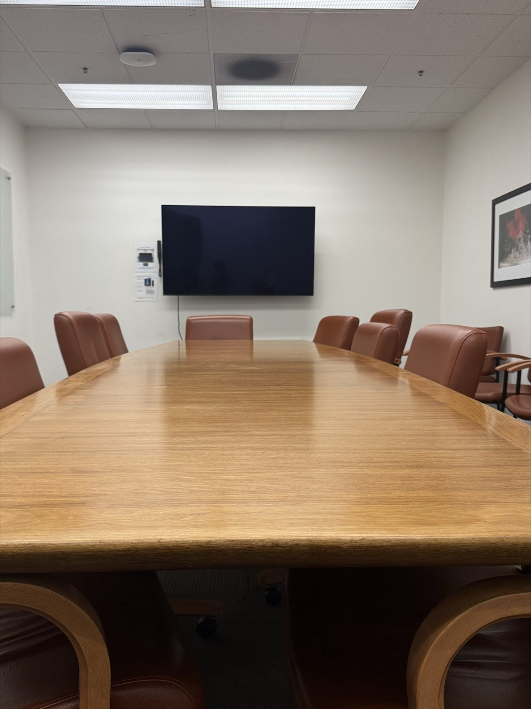
Set 2: Hallway
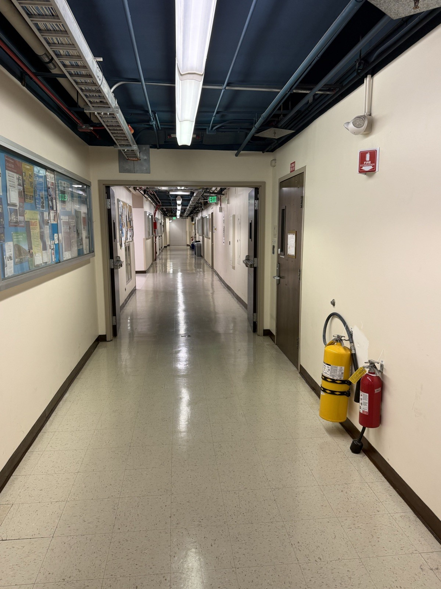
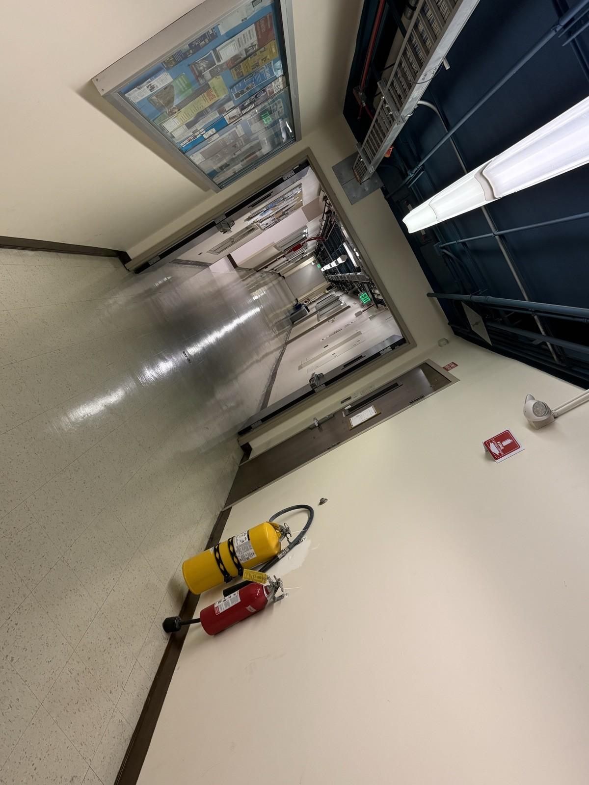
Set 3: Looking Down from a Balcony
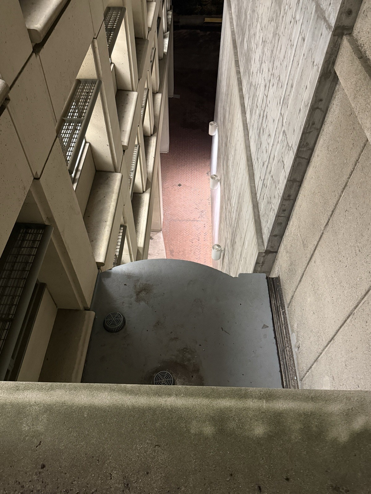
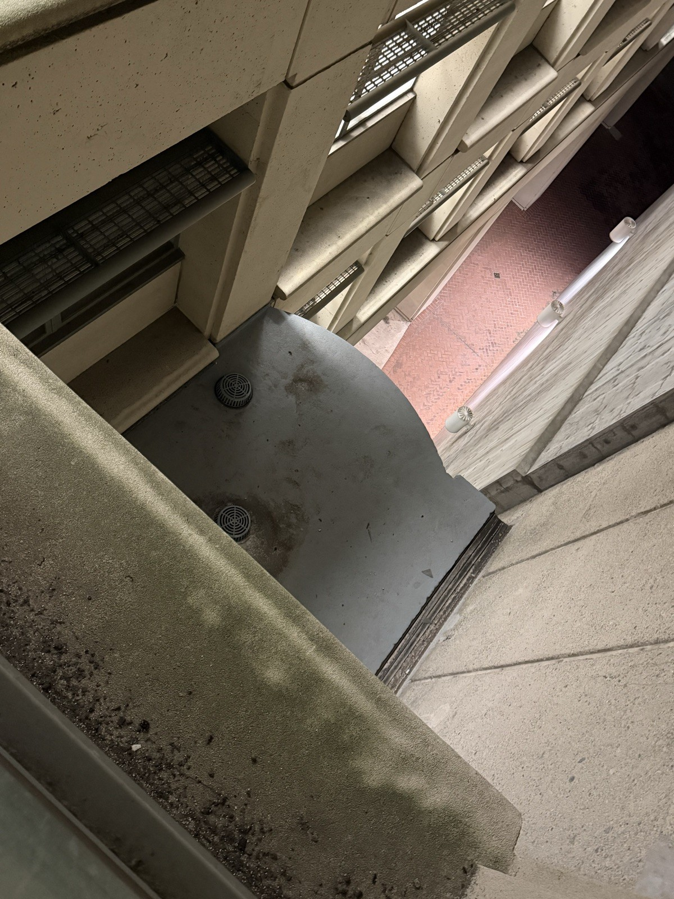
A.2: Recover Homographies
A homography H is a matrix that maps a point (x, y) in image 1 to its matching point (x', y') in image 2:
x' = (a·x + b·y + c) / (g·x + h·y + 1)
y' = (d·x + e·y + f) / (g·x + h·y + 1)
H = [ a b c ]
[ d e f ]
[ g h 1 ]
The bottom-right entry is fixed to 1, so there are 8 unknowns. Multiplying both sides by the denominator makes each equation linear in the unknowns, so every pair of matching points gives two rows of a linear system:
[ x y 1 0 0 0 -x·x' -y·x' ] [a b c d e f g h]ᵀ = [ x' ] [ 0 0 0 x y 1 -x·y' -y·y' ] [ y' ]
Four point pairs give exactly 8 equations, but clicks are never perfect, so I clicked about 10 pairs per set. Stacking them gives a 2n × 8 system A·h = b with more equations than unknowns, which I solved with least squares. This finds the H that best fits all the clicks at once. I wrote this in computeH(im1_pts, im2_pts) without any built-in homography functions.
To check each H, I mapped my image 1 points through it and measured how far they landed from the points I clicked in image 2 (the reprojection error).
Set 1: Conference Room
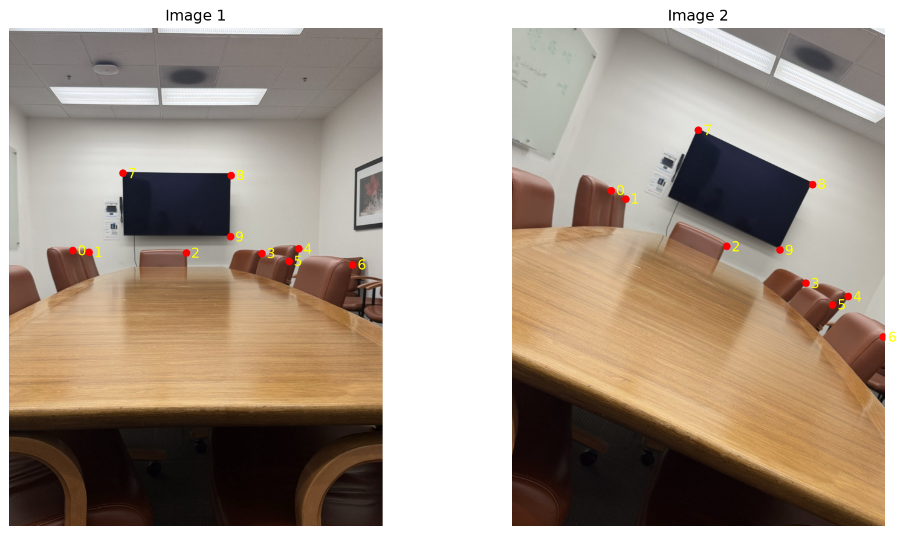
H = [ 1.094 -0.5126 450.9 ]
[ 0.5329 1.080 -371.4 ]
[ 7.25e-05 -4.45e-05 1 ]
Set 2: Hallway
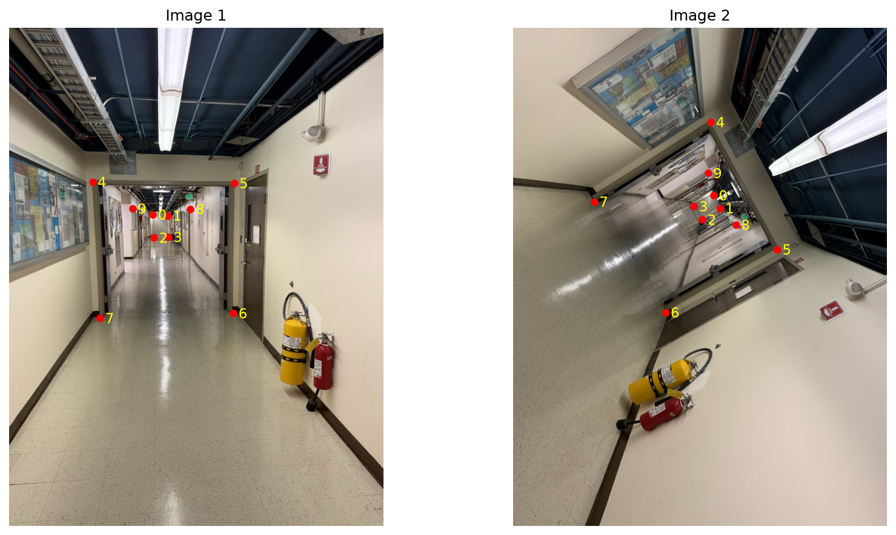
H = [ 0.3809 -0.8410 875.7 ]
[ 0.7023 0.2787 -37.77 ]
[ -3.15e-05 -2.24e-04 1 ]
The large rotation between these two shots shows up in the top-left 2×2 block, which is close to a rotation by about 60°.
Set 3: Balcony
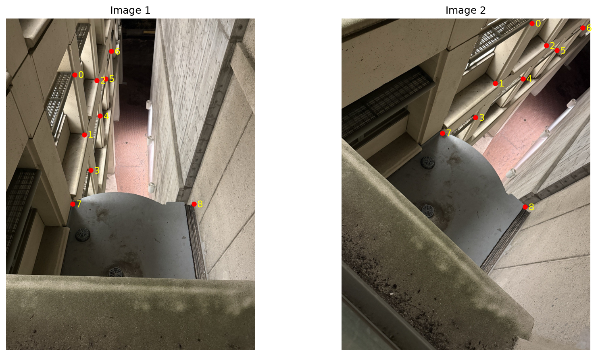
H = [ 0.8538 -0.6330 879.3 ]
[ 0.7659 1.034 -505.8 ]
[ 1.24e-05 2.36e-04 1 ]
I originally clicked 10 points here, and the mosaic came out as a long, stretched sliver. One point was a mismatch: the building face is a repeating grid of windows, and I had clicked a similar-looking window corner that isn't actually in image 2. Removing it fixed the homography.
A.3: Warp the Images
I wrote two warping functions, warpImageNearestNeighbor(im, H) and
warpImageBilinear(im, H), using inverse warping:
- Map the four corners of the image through H to find the bounding box of the output.
- For every pixel (x, y) in that box, map it backwards through H⁻¹ to find where it came from in the original image. Going backwards means every output pixel gets exactly one value, with no holes.
- Sample the original image at that spot. That spot is usually between pixels, which is where the two
methods differ:
- Nearest neighbor: round to the closest pixel and copy it.
- Bilinear: blend the 4 surrounding pixels, weighted by how close each one is.
- Output pixels whose source falls outside the original image are marked empty in an alpha mask, so they show up as transparent instead of black.
Rectification
To test the warps, I rectified two rectangular objects that were photographed at an angle. I clicked the 4 corners of each object and computed the H that sends them to the corners of a flat rectangle. The rectangle's width and height are the average lengths of the opposite clicked edges. Warping the whole image with that H makes the object face the camera head on.
The TV
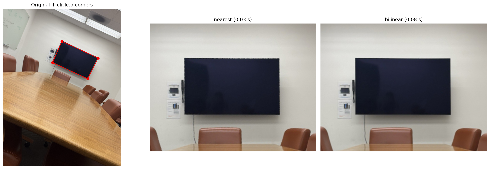
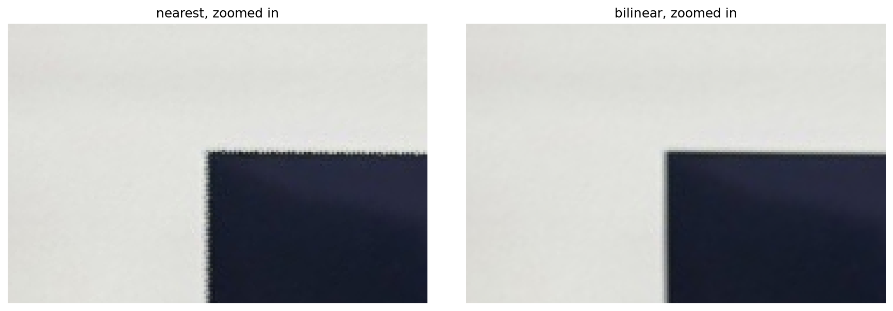
The Hallway Doorway
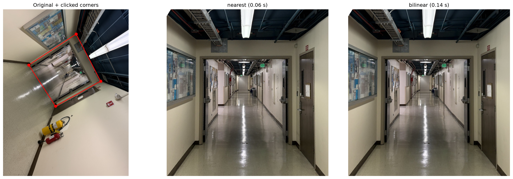
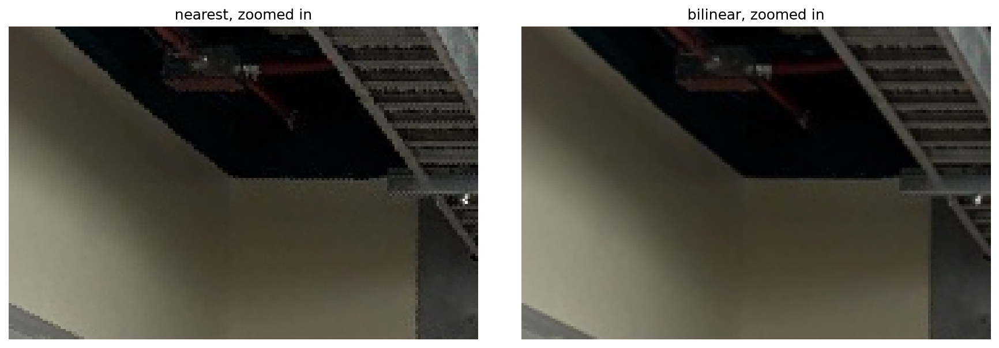
The doorway photo was taken with the camera rolled about 60°, so most of this H is a rotation. The frame's opposite sides also had different lengths in the photo, since the camera was tilted too. The perspective part of H (its bottom row) evens those out, which a plain rotation couldn't do.
Nearest Neighbor vs. Bilinear
At full size the two results look the same. Zoomed in, nearest neighbor gives straight edges a jagged, stair-stepped outline, because each output pixel goes to one whole source pixel. Bilinear keeps the same edges smooth, but it's slightly softer overall since every pixel is an average of four.
Nearest neighbor is faster because it does one lookup per pixel instead of four plus the blending math. On the TV it took 0.05 s vs. 0.16 s for bilinear, and on the doorway 0.11 s vs. 0.22 s. Bilinear looks noticeably better for a fraction of a second more, so I used it for the mosaics.
A.4: Blend the Images into a Mosaic
For each set, image 1 is the reference and stays as it is. Since H maps image 1 to image 2, I warped image 2 into image 1's view with H⁻¹. Both images go onto one shared canvas, big enough to hold both warped bounding boxes, so matching pixels land in the same place.
Just pasting one image over the other gives a hard seam, so I blended them:
- Weights: every pixel gets a weight equal to its distance to the nearest edge of its own image, scaled so the center is 1 and the edges are near 0. The weight map is warped along with the image. Where the two images overlap, each one counts more where it is further from its own edge.
- Two-band blending (a two-level Laplacian pyramid): I split each warped image into a low band (a Gaussian blur) and a high band (image − blur). The low bands are averaged with the weights, low = (w1·low1 + w2·low2) / (w1 + w2), so color and brightness fade smoothly across the overlap. For the high band, each pixel comes from whichever image has the larger weight there, so fine details stay sharp instead of showing up twice when the alignment is a few pixels off. The final mosaic is low + high.
Mosaic 1: Conference Room
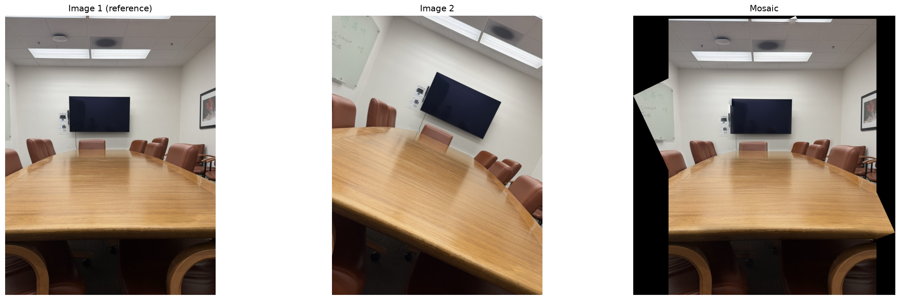
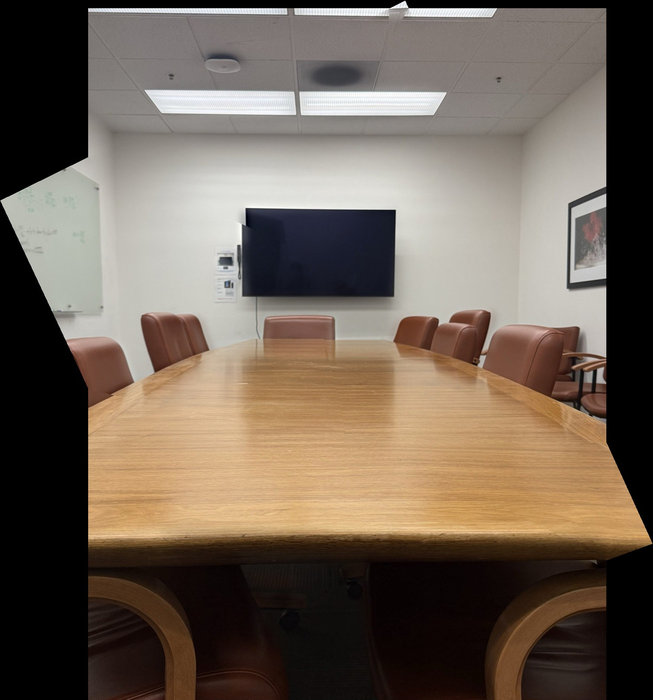
The two photos line up well. Image 2 adds the whiteboard on the left wall and a little more of the right side of the room.
Mosaic 2: Hallway
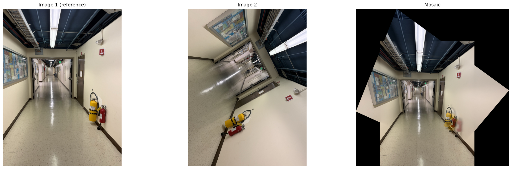
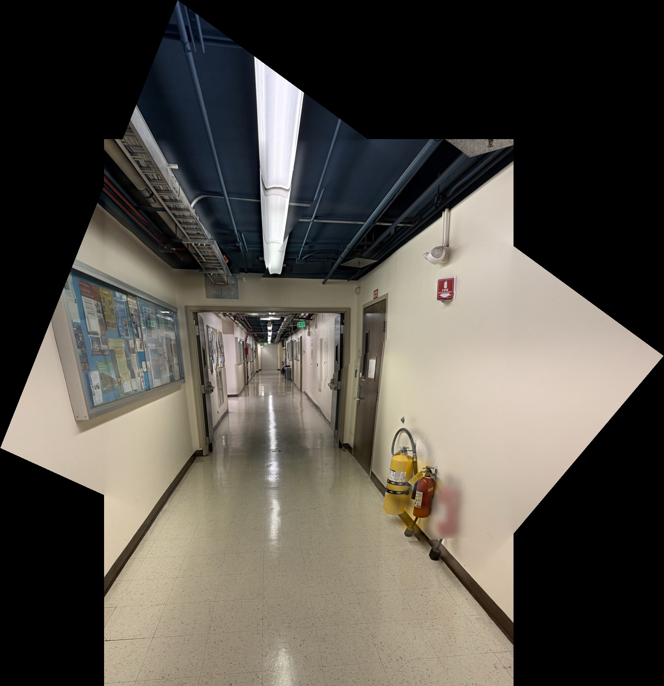
Image 2 was rolled about 60°, so once it's warped back it fills in the ceiling above image 1 and the walls on both sides. Most of the hallway lines up, but there is some ghosting near the fire extinguisher sign and the door on the right.
Mosaic 3: Balcony
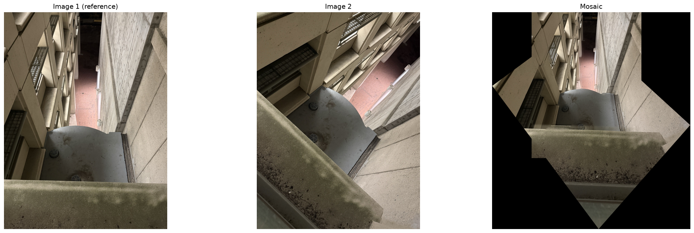
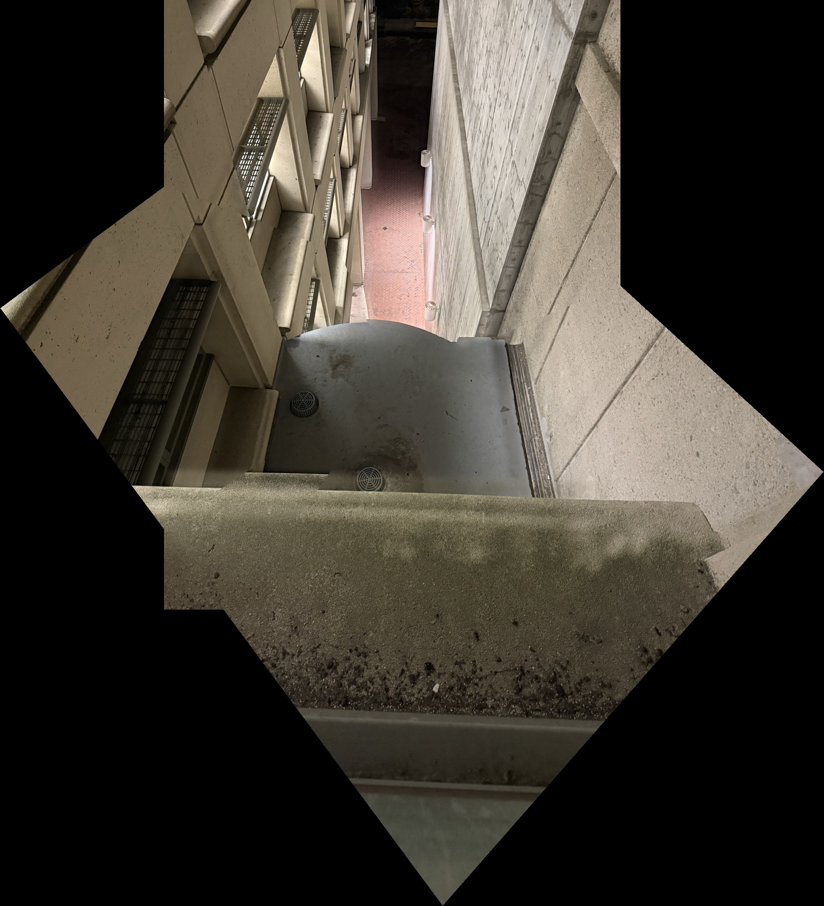
The building face, the patio, and the far wall line up. The ledge right in front of the camera doesn't: it's so close that even a small shift of my hand between shots moved it noticeably relative to the background. A homography can only line up a scene seen from a single point, so no H can fix both the ledge and the faraway patio at once.